PL2의 뿌리는 1986년, 충무로의 ‘사진연구소’에서 시작된 PL Studio입니다.
한 장의 광고 사진을 위해 빛을 세우고 재질을 읽던 그 정밀함을 2대째 이어받아,
PL2는 이제 영상과 모션, 3D, AI로 영역을 넓혀 가고 있습니다.
표현의 도구는 달라졌지만, 그 중심에는 여전히 PL Studio의 헤리티지가 숨 쉬고 있습니다.
그 위에서 우리는 서로 다른 매체를 ‘결합’해, 하나의 결과물로 완성합니다.PL2’s roots trace back to 1986 and PL Studio, which began as a photo lab in Chungmuro, Seoul.
The precision of shaping light and reading materials for a single ad photograph
has passed to a second generation, as PL2 expands into film, motion, 3D, and AI.
The tools have changed, but PL Studio’s heritage still beats at the center.
On that foundation, we combine different media into a single, finished work.
PL2의 뿌리는 1986년,
충무로의 ‘사진연구소’에서 시작된
PL Studio입니다.
한 장의 광고 사진을 위해
빛을 세우고 재질을 읽던
그 정밀함을 2대째 이어받아,
PL2는 이제 영상과 모션, 3D, AI로
영역을 넓혀 가고 있습니다.
표현의 도구는 달라졌지만,
그 중심에는 여전히
PL Studio의 헤리티지가 숨 쉬고 있습니다.
그 위에서 우리는 서로 다른 매체를
‘결합’해, 하나의 결과물로 완성합니다.PL2’s roots trace back to 1986
and PL Studio, which began
as a photo lab in Chungmuro, Seoul
The precision of shaping light
and reading materials
for a single ad photograph
has passed to a second generation,
as PL2 expands into film,
motion, 3D, and AI.
The tools have changed,
but PL Studio’s heritage
still beats at the center.
On that foundation, we combine
different media into
a single, finished work.
1986
Founded
10+
Services
20+
Partners
The Discipline of Detail.
1986년, 광고·제품·패션 사진의 현장에서 시작된 PL Studio는
형상과 빛, 재질로 사물의 본질을 읽어 내는 법을 연구해 왔습니다.
그 40년의 시선을 2대째 이어받은 PL2는 이제
인물과 제품, 아이디어를 어떠한 매체로든 자유롭게 담아냅니다.Born in 1986 on the sets of advertising, product,
and fashion photography,
PL Studio learned to read the essence of things through form, light, and material.
Inheriting that 40-year eye as a second generation, PL2 now
captures people, products,
and ideas freely, in any medium.
형태는 달라져도 디테일을 다루는 방식은 언제나 하나입니다.
기획 단계부터 대상의 본질을 깊이 있게 이해하고,
구조를 세밀하게 설계하며,
가장 적합한 표현을 찾아갑니다.
한 장의 사진에 가치를 담던 그 태도가
바로 PL2가 모든 매체에서 흔들림 없는 완성도를 만드는 이유입니다.Forms may change, but the way we handle detail never does.
From planning onward, we study the subject’s essence, structure it with care,
and search
for the most fitting expression. The attitude that once gave value
to a single photograph is why PL2 delivers unwavering quality in every medium.
Production
아이디어가 화면이 되는 전 과정을 책임집니다.From Idea to Screen
콘셉트 기획부터 촬영, 아트 디렉팅, 편집까지.
광고 사진으로 다져 온 40년의 현장 감각으로
브랜드의 언어를 시각으로 번역합니다.
삼성, CJ, HYBE, 신세계, 나이키 등 국내외 주요 브랜드와 함께
캠페인과 비전 필름을 만들어 왔습니다.From concept and shooting to art direction and editing.
With 40 years of on-set instinct honed in advertising photography,
we translate a brand’s language into visuals, creating campaigns
and vision films with Samsung, CJ, HYBE, Shinsegae, Nike, and more.
Motion
움직임은 메시지를 완성합니다.Bringing Messages to Life Through Motion
2D 모션 그래픽부터 3D 애니메이션, 실사와 CG 합성(Compositing)까지.
한 장면의 구도와 빛을 다루던 감각 위에 시간을 더합니다.
PL2의 모션은 보기 좋은 효과에 그치지 않고, 정보가 흐르는 순서와
화면의 밀도까지 계산해 설계한 움직임입니다.2D 모션 그래픽부터 3D 애니메이션, 실사와 CG 합성까지.
한 장면의 구도와 빛을 다루던 감각 위에 시간을 더합니다.
PL2의 모션은 보기 좋은 효과에 그치지 않고, 정보가 흐르는 순서와
화면의 밀도까지 계산해 설계한 움직임입니다.From 2D motion graphics and 3D animation to live action and CG compositing.
To a sense for composition and light in a single frame, we add time.
PL2’s motion goes beyond eye candy: every movement is designed around
the flow of information and the density of each frame.
UI /UX
디테일이 쌓일 때, 브랜드는 신뢰가 됩니다.Building Brand Trust Through Detail
사진가가 프레임 안의 시선을 설계하듯,
PL2는 화면 위의 시선과 흐름을 설계합니다.
사용자가 무엇을 느끼고, 어디서 멈추고, 언제 클릭하는지까지 살피며
보이는 것과 작동하는 것을 같은 기준으로 다룹니다.As a photographer guides the eye within a frame,
PL2 designs where the eye goes and how it flows
on screen.
Watching what users feel, where they pause,
and when they click,
we treat what is seen and what works by the same standard.
AI
PL2는 AI를 실험이 아닌 실전 도구로 씁니다.AI as a Creative Production Tool
콘셉트 단계에서 이미 완성에 가까운 결과물을 보여주고,
상상했던 장면을 현실로 만들어냅니다.
한 장의 사진에서 시작된 PL의 언어는 이제 AI를 통해
영상, 음악, 내레이션, 인터랙션으로 확장됩니다.
도구가 새로울수록, 그것을 다루는 눈은
오래된 것이어야 한다고 믿습니다.We use AI as a practical production tool across concept development, film, music, narration, and interactive content. As technology evolves, we pair new tools with decades of creative judgment, turning ideas into finished work.
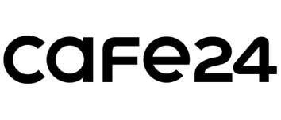
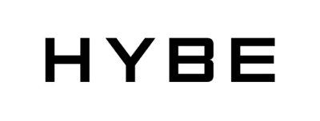
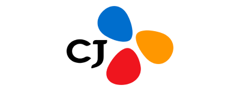
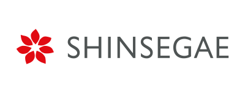
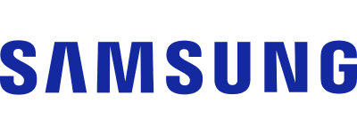
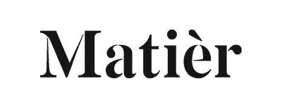
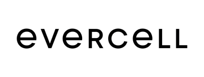
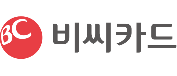
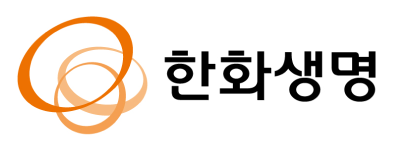
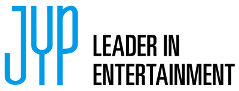
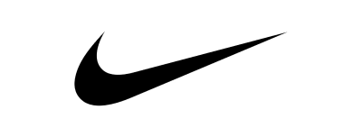
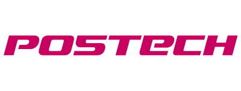